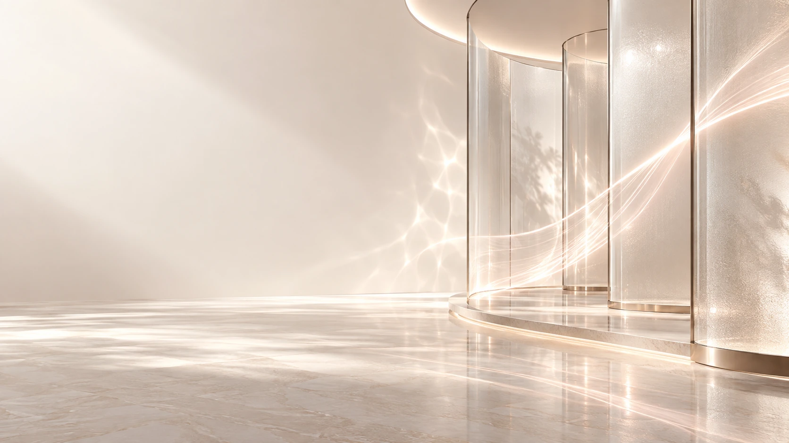
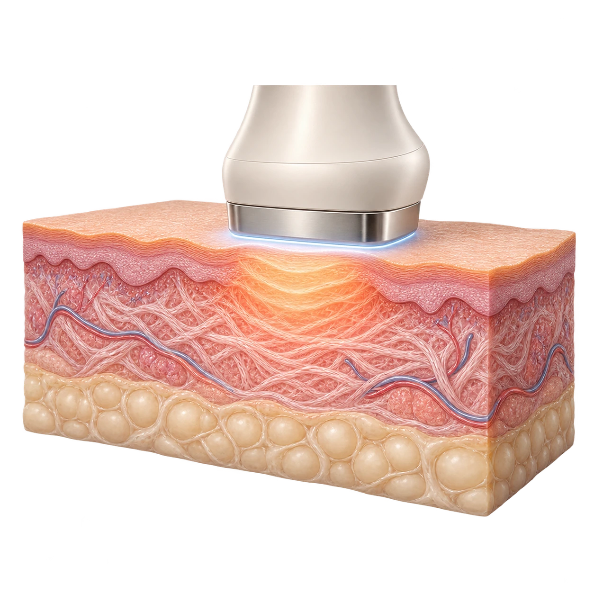

AccuREP™
에너지 전달을 세심하게
피부 반응에 맞춰 에너지 전달을 조정하는 기술로, 시술 부위별로 세심한 접근을 돕습니다.


01 / THERMAGE FLX
Firmness,
refined.
써마지 FLX는 단극성 고주파(RF) 에너지를 이용하는 비침습적 시술입니다. 피부 조직에 열에너지를 전달해 콜라겐의 재형성과 탄력 개선을 돕습니다.
피부 두께와 탄력, 얼굴의 볼륨과 윤곽을 함께 살펴 내 피부에 맞는 시술 범위와 강도를 계획합니다.
RF
고주파 에너지
FLX
맞춤형 탄력 관리

02 / RADIOFREQUENCY
열에너지와 쿨링이 함께 만드는
써마지 FLX의 탄력 관리.

01
고주파 에너지가 피부 조직에 열을 전달해 콜라겐 재형성 과정을 돕습니다. 피부 상태와 시술 부위에 맞춰 에너지를 조절합니다.
02
에너지 전달 과정에서 피부 표면을 냉각해 보호를 돕습니다. 시술 중 느끼는 열감과 편안함은 개인에 따라 다를 수 있습니다.
03
시술 후 콜라겐 재형성이 이어지면서 탄력과 피부결의 변화를 점진적으로 살펴봅니다. 변화의 시기와 정도는 피부 상태에 따라 달라집니다.
03 / DESIGNED FOR YOUR SKIN
AccuREP™
피부 반응에 맞춰 에너지 전달을 조정하는 기술로, 시술 부위별로 세심한 접근을 돕습니다.
Cooling
피부 표면을 냉각하는 쿨링 기능이 열에너지 전달 과정에서 피부 보호를 돕습니다.
Vibration
진동 기능을 함께 활용해 시술 중 편안함을 돕습니다. 열감이나 불편함은 의료진과 바로 조율합니다.
04 / YOUR SKIN, YOUR PLAN
같은 써마지라도 피부 두께와 볼륨,
고민 부위에 따라 계획은 달라집니다.
01
볼의 탄력이 줄거나 턱선이 부드러워 보일 때, 처짐과 볼륨을 함께 확인합니다.
02
피부결과 잔주름이 신경 쓰일 때, 피부 두께와 건조함을 함께 살핍니다.
03
눈 주변은 피부 특성과 적합한 전용 팁, 보호 조치를 확인한 후 시술 가능 여부를 안내합니다.
05 / THE RIGHT DETAILS
팁은 시술 부위에 맞춰 선택합니다. 눈가처럼 섬세한 부위는 적용 범위와 보호 방법을 별도로 확인해야 합니다.
01 / CONSULT
상담에서 시술 부위와 계획을 설명 듣고, 사용할 팁과 샷 수를 확인해 주세요.
02 / CHECK
팁 포장의 정품 인증 정보와 확인 절차를 원내 안내에 따라 함께 확인할 수 있습니다.
06 / FROM CONSULTATION TO CARE
01
피부 탄력과 두께, 볼륨을 확인하고 필요한 부위와 에너지 계획을 세웁니다.
02
시술 중 열감과 피부 반응을 살피며 진행합니다. 불편한 느낌은 바로 말씀해 주세요.
03
시술 후 피부 상태를 확인하고 생활 관리와 경과 확인 일정을 안내합니다.
심장박동기 등 삽입형 전자기기, 시술 부위의 금속·보형물, 피부 질환이나 최근 받은 시술이 있다면 알려주세요. 임신·수유 여부와 복용 중인 약도 함께 확인합니다.
보습과 자외선 차단을 유지하고, 강한 열 자극이나 피부를 세게 문지르는 행동은 의료진 안내에 따라 조절해 주세요. 붉어짐이나 붓기, 열감이 일시적으로 나타날 수 있으며, 통증이 심해지거나 물집 등 평소와 다른 변화가 있으면 바로 알려주세요.
07 / QUESTIONS & ANSWERS
단극성 고주파 에너지를 피부 조직에 전달해 콜라겐 재형성과 탄력 개선을 돕는 비침습적 시술입니다. 피부 상태와 고민 부위에 맞춰 시술 계획을 세웁니다.
써마지는 고주파, 초음파 리프팅은 초음파 에너지를 사용합니다. 에너지의 전달 방식과 적용 특성이 달라 피부 두께, 처짐, 볼륨을 함께 살펴 적합한 방법을 상담합니다.
피부 상태와 시술 범위, 사용할 팁, 원하는 방향을 함께 고려해 결정합니다. 샷 수만으로 결과를 판단하기보다 부위별 계획과 시술 강도를 함께 확인하는 것이 좋습니다.
시술 부위와 샷 수, 준비 및 마취 과정에 따라 달라집니다. 상담 시 계획에 맞는 예상 소요 시간을 안내해 드립니다.
짧은 열감과 쿨링, 진동을 느낄 수 있습니다. 느끼는 정도에는 개인차가 있으므로 불편한 느낌이 있으면 말씀해 주세요. 의료진이 피부 반응을 살피며 진행합니다.
콜라겐 재형성이 진행되면서 수개월에 걸쳐 점진적인 변화를 살펴볼 수 있습니다. 변화의 시기와 정도, 유지 양상은 개인의 피부 상태와 생활습관 등에 따라 달라집니다.
대체로 시술 후 일상생활이 가능하지만 일시적인 붉어짐, 붓기나 열감 등이 나타날 수 있습니다. 회복 정도에 맞춰 관리 방법을 안내하며 중요한 일정이 있다면 미리 알려주세요.
피부 상태와 시술 후 경과, 다른 시술 계획을 함께 고려해 결정합니다. 정해진 간격을 일괄 적용하기보다 상담을 통해 유지 관리 일정을 안내해 드립니다.
눈가 등 섬세한 부위나 다른 시술과의 병행은 적용 가능 범위, 사용할 팁, 피부 상태와 기존 시술 이력을 확인한 뒤 안내합니다. 필요한 경우 시술 순서와 간격을 나누어 계획합니다.
나에게 맞는 이벤트를 펼쳐보세요.

A moment for yourself.
홍대·합정 뷰티블라썸의원
피부 고민과 지금까지 받은 시술을 함께 알려주세요.